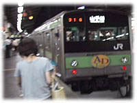
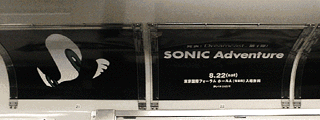
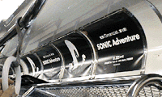

０８／０４（金）

今日はサクラ大戦歌謡ショウ４「アラビアのバラ」公演の千秋楽だったので行かなきゃと思っていたんだけど、結局忙しくて会社を出るのが遅くなっていけませんでした。広井さんすみませんです。m(__)m 実は今までの公演は３回とも見に行っていたので今回も絶対に行こうと思っていたので残念です。この日はそのあと新宿で、お誕生会を理由にした業界の方々の飲み会があるので、どちらにしても新宿には出たんでホント残念です。
 で、飲み会の為に今日は久しぶりに電車に乗って新宿に向かいました。会社から京急に乗って品川で新宿行きの山手線に乗り換えたんですが、乗ってからなんかやけにポケモンのポスターが多い電車だなーとか思っていたらなんと、ポケモントレインでした。(^_^;) この間の
ＡＮＡの飛行機といいポケモンづいているなーとか思いつつ自分で可笑しくなってきたので、
これは写真とって日記に書こうとか思って電車の中でポケモントレインの写真をとっていたら周りの客にかなり怪しまれ結構気まずかったです。そりゃ大の大人がポケモンの写真バシバシ撮っていたら怪しいよね。でも本人的には「俺の子供の為に撮ってるんだよ」とか思われると大丈夫とか思って恥ずかしいのをこらえて撮っていたんだけどなー。ちなみに、僕は独身なので子供も嫁さんもいないので誤解しないで下さいね。(^_^;)
で、飲み会の為に今日は久しぶりに電車に乗って新宿に向かいました。会社から京急に乗って品川で新宿行きの山手線に乗り換えたんですが、乗ってからなんかやけにポケモンのポスターが多い電車だなーとか思っていたらなんと、ポケモントレインでした。(^_^;) この間の
ＡＮＡの飛行機といいポケモンづいているなーとか思いつつ自分で可笑しくなってきたので、
これは写真とって日記に書こうとか思って電車の中でポケモントレインの写真をとっていたら周りの客にかなり怪しまれ結構気まずかったです。そりゃ大の大人がポケモンの写真バシバシ撮っていたら怪しいよね。でも本人的には「俺の子供の為に撮ってるんだよ」とか思われると大丈夫とか思って恥ずかしいのをこらえて撮っていたんだけどなー。ちなみに、僕は独身なので子供も嫁さんもいないので誤解しないで下さいね。(^_^;)
|
しかし、このポケモントレインって山手線が内回りと外回りで約１００本位走っているはずなので、その中で２本しか走っていないのにあたるとはなんと運がいいんでしょう。ちなみに、このポケモントレインはＡＤトレインと言って列車の中にある広告をすべてポケモンならポケモンの広告だけにする列車のことで、２年前にファミ通さんのご協力により、『ソニックアドベンチャー』製作発表会の告知の広告を車両半分をソニックで埋めたこともあるんですよ。もう２年も前なんだなーとちょっと感慨深いものがありました。


|
そして、飲み会に行ってきました。６日にセガの竹崎さんが、１１日にＣＧプロデューサー倉澤さんがお誕生日です。お二人ともお誕生日おめでとうございます。＼(^o^)／
この飲み会は『トゥナイト２』ディレクターの橘さんが主催の飲み会だったのですが、何時もはわりとお兄さん(^^)が多いのですが、この日はお二人の誕生日だからか美女が５人もいたので華やかな飲み会でした。(^○^)
 沢山写真撮ったんですが、飲んでいるときの写真は人に見せれるもんじゃないですね。(^_^;) 一枚だけ写真を載せましたがこの写真に写っている人を全部言い当てれたらかなり業界通ですよ。ちなみに全員一回は『トゥナイト２』に出たことがあるので分かるかな？ 細かく書こうかと思ったのですが、やばいことを書きそうなのでこの辺でやめときます。(^^)
沢山写真撮ったんですが、飲んでいるときの写真は人に見せれるもんじゃないですね。(^_^;) 一枚だけ写真を載せましたがこの写真に写っている人を全部言い当てれたらかなり業界通ですよ。ちなみに全員一回は『トゥナイト２』に出たことがあるので分かるかな？ 細かく書こうかと思ったのですが、やばいことを書きそうなのでこの辺でやめときます。(^^)
|
|